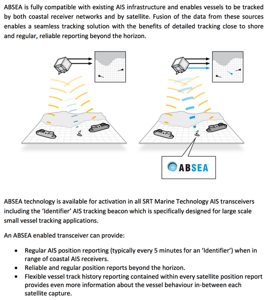

05.26.2014 19:39
Confusion over SRT and ExactEarth's press release
I posted this yesterday
on google plus.
TL;DR Probably one of: it's NOT AIS (using some other freq/comm encoding), it's an out of spec Class B AIS, or a spamming binary message with EEC to compensate for expected BER. I strongly dislike that they do not say.
I'm going to have to call BS on this press release from exactEarth. They do not say what exactly their technology is in a ground based class B transceiver is that makes it better for being able to be received by satellite. If they are truly altering how they transmit class B and somehow embedding more information, then these AIS Class B units are out of spec and you should expect to have them confiscated if you use them in any countries waters (even if it's a mode that flips on/off). My best guess is that they are using a frequency owned by someone else and transmit on that with some other system. So... it's not ITU 1371.1-4 AIS at that point. Lots of other people do tracking in other frequency ranges and do that via satellites. A quick example... SPOT. I really dislike announcements like this that are all unsubstantiated hype. I don't expect system definitions in a press release, but they could reference docs frequency allocations, tx methods and power.
Or am I missing something huge? Are they fiddling with the encoding, power shaping each slot datagram, phase shifting the transmission to increase SN/correlation?
How do they get this extra information in? That implies that they are using an un-approved message type. Or they could be using a Application Specific Message (ASM)/Binary Broadcast Message(BBM) defined by some country? Then they might just spam the channel with lots of really small packets at high transmit rate. The obvious solution is to use Msg 6, 8, 26 or 27 and just fill the channel. If you ignore the AIS checksum info and have the payload contain really robust error correction data, you don't have to worry about trying to get a correct decode. Just save the data from all the known time slots and merge recoverable chunks until you have the full message. If I knew that a particular AIS unit was going to transmit the same message N times starting at know times and each TX had error correction built into the bit stream, I could definitely get the chances of receiving them message to near 100% for each satellite pass. You combine that with phase discrimination (those ships infront of the sat are shift up in freq and those behind are lower in freq), and you have a pretty decent receive rate. Being out in international waters, maybe you can get away with stuff like this. Try this in US waters and you should expect to have a visit from the feds if you are in the AIS frequencies (assuming that they can get their tracking act together). This is what a lot of other communications protocols have done for ages. It's sad that the creators of AIS never put any of this into the AIS core spec. But maybe we should be glad they didn't, because if it mirror the way other AIS specs were written, it would be an unimplementable disaster.
There are a few other possibilities, but those are the most likely.
http://exactearth.com/news/2014-05-23/
http://softwarerad.com/uploads/file_upload/file/260/ABSEA%20Whitepaper%20Draft%204.pdf
Additionally quotes like this make no sense to me. TDMA doesn't make the job of tracking a particular ship easier, but it in no way prevents you from receiving a non-Class A (e.g. Class B) message.
I argue that we should avoid proprietary solutions and without more info, it appears that the ABSEA thing is likely very much a closed proprietary system. I look forward to SRT publishing more information and and open (and patent-free) standard that all can implement (both tx & rx). We really should have a message for the high seas. The minimalistic AIS satellite message isn't great. Would be so much better to have a standard message for the high seas (low load VDL areas) that has EEC and transmits on a known slot. e.g. We could have a hash that converts an MMSI to a particular start slot. And if you know that a number of repeats will give the same exact message, you really have something to work with.
The current receiver design seems fundamentally flawed in requiring all messages to pass the checksum reporting. I wish that receivers would optionally report bad messages with a flag detailing the failure.
TL;DR Probably one of: it's NOT AIS (using some other freq/comm encoding), it's an out of spec Class B AIS, or a spamming binary message with EEC to compensate for expected BER. I strongly dislike that they do not say.
I'm going to have to call BS on this press release from exactEarth. They do not say what exactly their technology is in a ground based class B transceiver is that makes it better for being able to be received by satellite. If they are truly altering how they transmit class B and somehow embedding more information, then these AIS Class B units are out of spec and you should expect to have them confiscated if you use them in any countries waters (even if it's a mode that flips on/off). My best guess is that they are using a frequency owned by someone else and transmit on that with some other system. So... it's not ITU 1371.1-4 AIS at that point. Lots of other people do tracking in other frequency ranges and do that via satellites. A quick example... SPOT. I really dislike announcements like this that are all unsubstantiated hype. I don't expect system definitions in a press release, but they could reference docs frequency allocations, tx methods and power.
Or am I missing something huge? Are they fiddling with the encoding, power shaping each slot datagram, phase shifting the transmission to increase SN/correlation?
How do they get this extra information in? That implies that they are using an un-approved message type. Or they could be using a Application Specific Message (ASM)/Binary Broadcast Message(BBM) defined by some country? Then they might just spam the channel with lots of really small packets at high transmit rate. The obvious solution is to use Msg 6, 8, 26 or 27 and just fill the channel. If you ignore the AIS checksum info and have the payload contain really robust error correction data, you don't have to worry about trying to get a correct decode. Just save the data from all the known time slots and merge recoverable chunks until you have the full message. If I knew that a particular AIS unit was going to transmit the same message N times starting at know times and each TX had error correction built into the bit stream, I could definitely get the chances of receiving them message to near 100% for each satellite pass. You combine that with phase discrimination (those ships infront of the sat are shift up in freq and those behind are lower in freq), and you have a pretty decent receive rate. Being out in international waters, maybe you can get away with stuff like this. Try this in US waters and you should expect to have a visit from the feds if you are in the AIS frequencies (assuming that they can get their tracking act together). This is what a lot of other communications protocols have done for ages. It's sad that the creators of AIS never put any of this into the AIS core spec. But maybe we should be glad they didn't, because if it mirror the way other AIS specs were written, it would be an unimplementable disaster.
There are a few other possibilities, but those are the most likely.
http://exactearth.com/news/2014-05-23/
http://softwarerad.com/uploads/file_upload/file/260/ABSEA%20Whitepaper%20Draft%204.pdf

Additionally quotes like this make no sense to me. TDMA doesn't make the job of tracking a particular ship easier, but it in no way prevents you from receiving a non-Class A (e.g. Class B) message.
the TDMA radio access scheme which makes AIS such a robust system, means that satellite detection of terrestrial transmissions has been limited only to Class A transceiversAnd if 95% of the AIS transceivers out there use SRT as their core, we have a monopoly. I need to take a look at the Class B vender field to see what the distribution is these days.
I argue that we should avoid proprietary solutions and without more info, it appears that the ABSEA thing is likely very much a closed proprietary system. I look forward to SRT publishing more information and and open (and patent-free) standard that all can implement (both tx & rx). We really should have a message for the high seas. The minimalistic AIS satellite message isn't great. Would be so much better to have a standard message for the high seas (low load VDL areas) that has EEC and transmits on a known slot. e.g. We could have a hash that converts an MMSI to a particular start slot. And if you know that a number of repeats will give the same exact message, you really have something to work with.
The current receiver design seems fundamentally flawed in requiring all messages to pass the checksum reporting. I wish that receivers would optionally report bad messages with a flag detailing the failure.